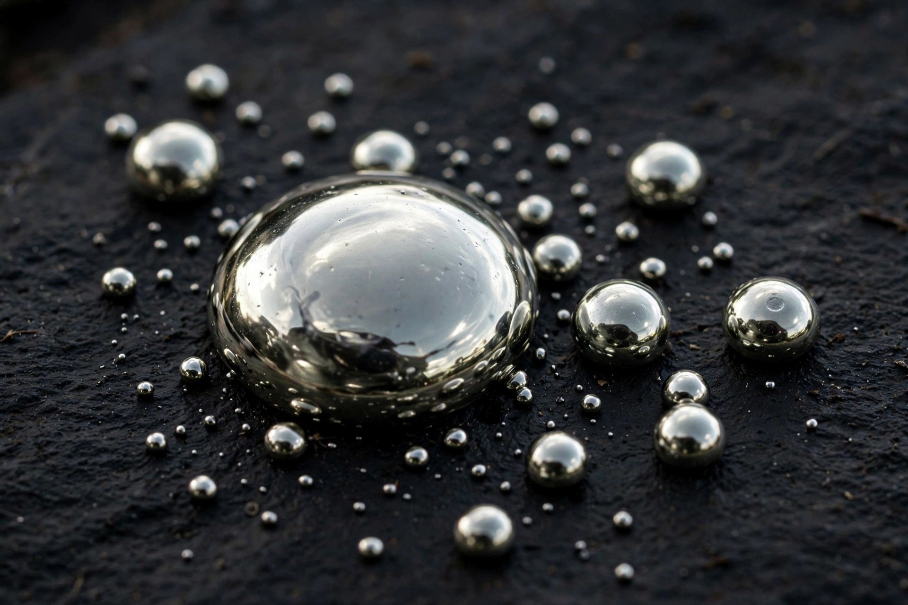

Mercury (element)
From Wikipedia, the free encyclopedia
Mercury, also called quicksilver, is the chemical element with the symbol Hg (from Greek hydrargyros, 'water-silver') and atomic number 80. It is the only metal that is liquid at standard temperature and pressure, freezing at −39 °C and boiling at 357 °C.
Mercury's smooth expansion made it ideal for thermometers and barometers, and it was used in tilt switches, fluorescent lamps and dental amalgam. Because mercury and its compounds (such as methylmercury, which caused Minamata disease) are highly toxic and accumulate in food chains, most uses are being phased out under the Minamata Convention.

History
Mercury was known to the ancient Chinese and Hindus and was central to alchemy. Its main ore is the red mineral cinnabar (HgS). Large historic mines at Almadén, Spain, and Idrija, Slovenia, supplied the world's mercury for centuries.
Properties
Liquid mercury forms near-spherical beads with very high surface tension and does not wet glass. It readily forms amalgams with many metals, a property once used to extract gold and silver from ore.
See also
Metal · Periodic table · Thermometer · Gold